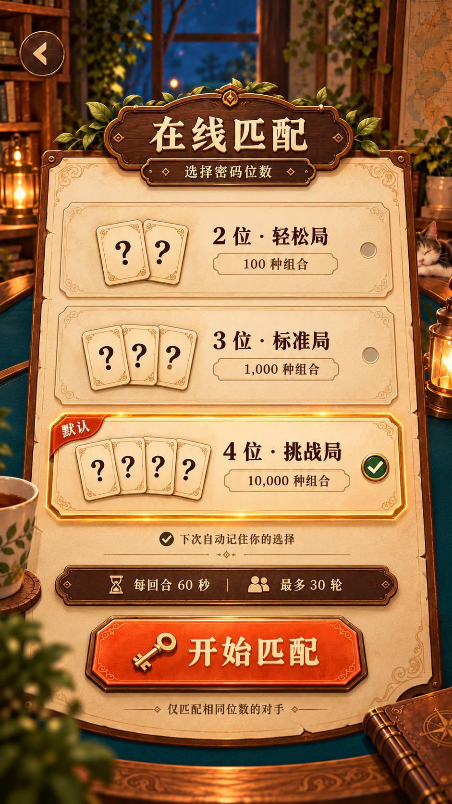
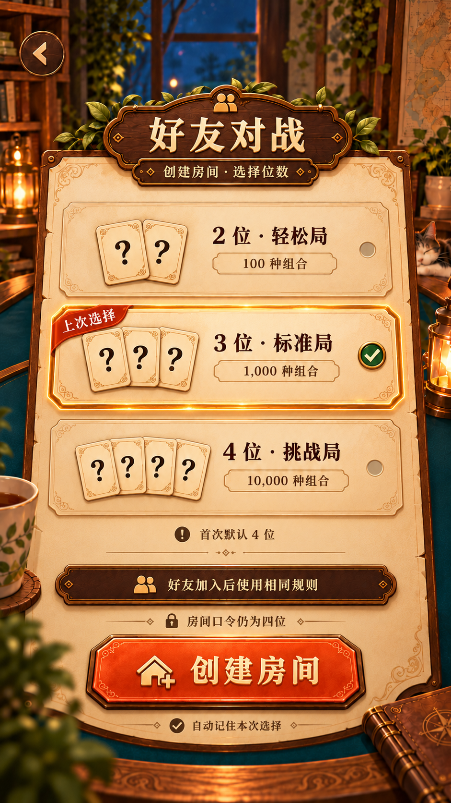
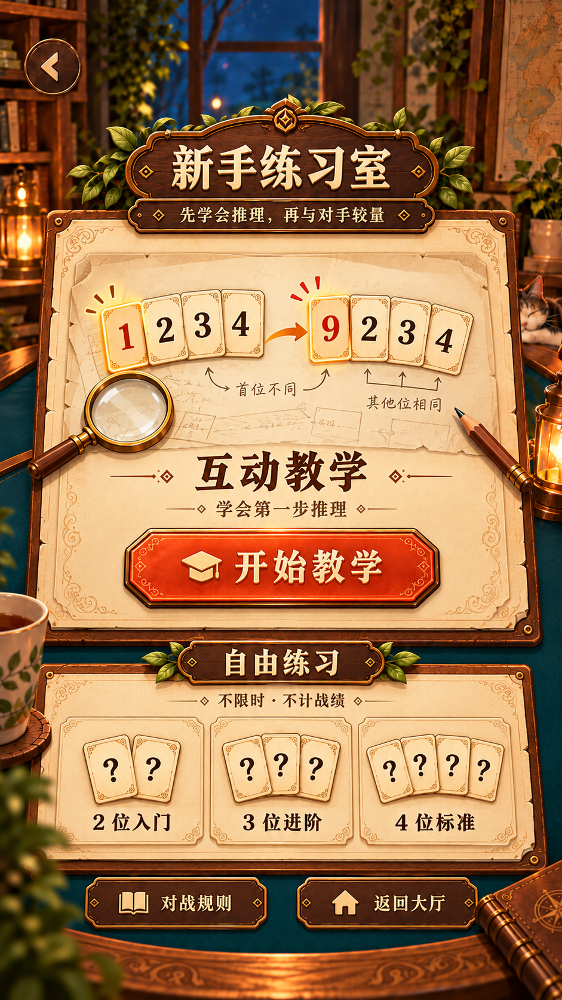
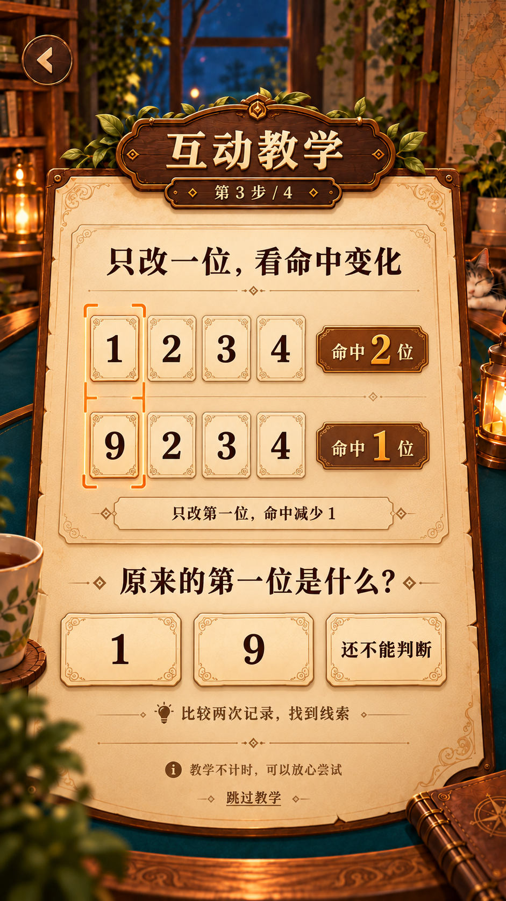
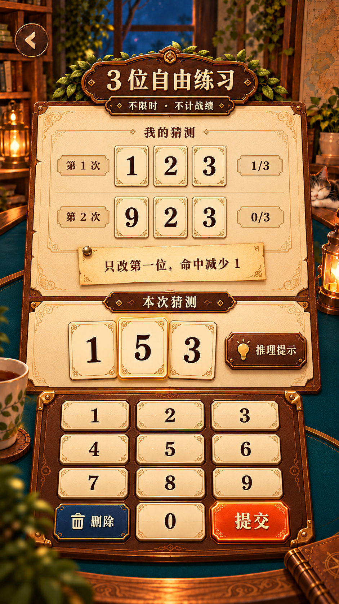
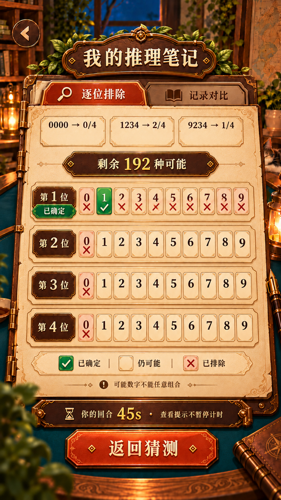
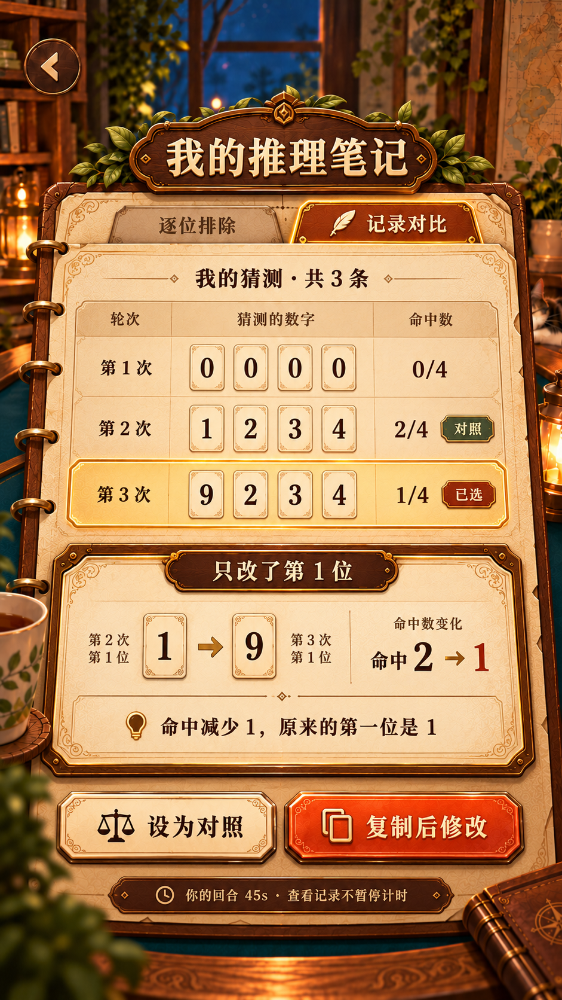

7 张 imagegen 独立设计稿 · 941 × 1672 · 2026-10-30设计预览，尚未切图或接入运行界面。点击图片查看原尺寸。

四位默认选中，明确 60 秒／30 轮与记忆选择。

示例为上次选择三位；首次仍默认四位，房间口令始终四位。

以互动教学为主入口，提供 2／3／4 位练习。

比较 1234 → 2 位与 9234 → 1 位，只标记改动列。

三位输入、三位记录、不计时、不计战绩。

全部历史约束得到 192 个候选，区分已确定、仍可能和已排除。

任选记录作对照，解释单位置变化并支持复制后修改。